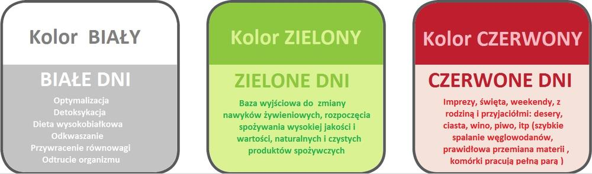
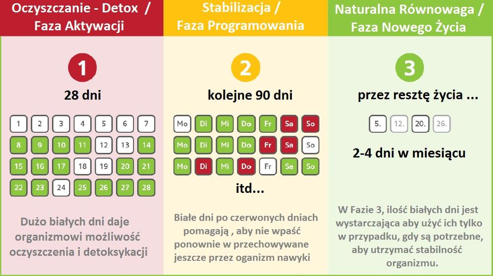
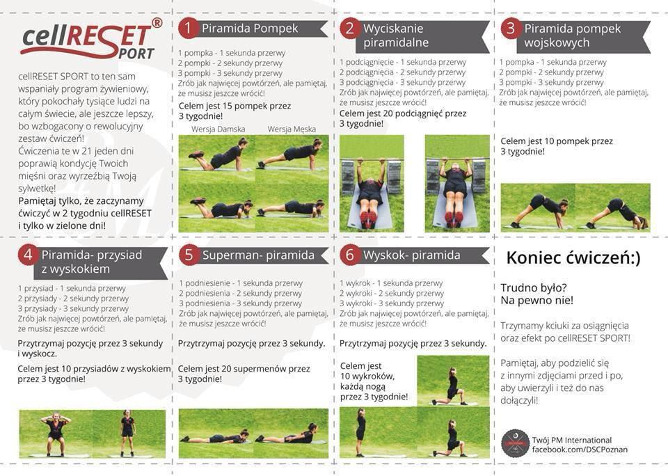

28-dniowy program żywieniowy, którego celem jest oczyszczenie organizmu oraz uzupełnienie witamin, mikroelementów oraz aminokwasów. Pozbycie się wszelkiego rodzaju złogów, toksyn oraz wszystkiego tego, co jest dla organizmu zbędne, a tym samym szkodliwe.
Program rewolucjonizuje cały świat swoim efektywnym działaniem (sportowcy, branża fitness, kosmetologia, zdrowie). Poprzez rezultaty jakie przynosi, zyskał sympatie tysięcy osób na całym świecie. Nadzorowany przez grupę czterech profesorów,w tym również twórcę programu prof. Aage Stensteh`a.
To trwający zaledwie 28 dni proces „zresetowania” wszystkich komórek w organizmie. Rewolucyjna koncepcja zdrowia i kontroli wagi optymalnej pierwotnie opracowana przez inżynierów NASA. Tajemnica tkwi w odpowiednim zbilansowaniu metabolizmu, w oparciu o specjalnie ułożoną dietę oraz wyjątkowe produkt firmy NTC FitLine. Połączenie tych dwóch dopracowanych elementów programu CellReset, pozwala na zrównoważenie hormonów. W ciągu 28 dni następuje całkowity proces oczyszczenia oraz dożywiania wszystkich komórek organizmu. Dzięki takiej przemianie następuje, tzw.”skutek uboczny”, czyli znaczna utrata wagi oraz modelowanie sylwetki. Program znakomicie sprawdzi się również u osób, które nie mają problemu z nadmiarem tkanki tłuszczowej lub wręcz cierpią z powodu niskiej wagi i chciałyby odżywić i oczyścić swój organizm, co staje się nieodzowne w dzisiejszych czasach. Wymagania dotyczące SUPLEMENTACJI , są postawione na najwyższym poziomie. Suplementy zastosowane w programie cellRESET® muszą spełniać wysokie wymagania co do ich jakości, czystości, biodostępności oraz co do zapotrzebowania na niezbędne do stosowania programu, wysokowartościowe, naturalne składniki pokarmowe.
 Dzielimy dni w tygodniu na trzy przedstawione kolory:W białe dni, używamy tylko pokarmów wysokobiałkowych i nigdy nie solonych lub słodzonych cukrem lub innymi sztucznymi słodzikami. Pokarmy te są używane w Fazie 1 przede wszystkim do oczyszczania organizmu oraz w kolejnych fazach jak dni kompensacyjnych, gdy organizm potrzebuje powrotu do równowagi. Zielone dni dostarczają wystarczających składników odżywczych w bezpieczny sposób i pomagają utrzymać organizm w równowadze. Później te dni powinny stanowić i stanowią większą część programu. Czerwone dni, to są nasze "Wolne Dni", gdzie w zasadzie wszystko możemy jeść. Zdrowy, zbilansowany metabolizm toleruje okazjonalne "grzechy", bez ryzyka odejścia od koncepcji. Jeśli skorzystałeś z takich dni, wyrównasz wszystko w jeden biały dzień.Tak wyglądają obrazowo 3 fazy przez które przeprowadzi nas program cellRESET®. 
Program Żywieniowy - Prezentacja

4 X Activize, 2 X Restorate, 2 X Herbaslim, 1 X ProShape Amino, 1 X Jogurt w tym Jogurtownica Gratis, 1 X Basic Aby rozpocząć stosowanie Programu cellRESET®,wystarczy, że skontaktujesz się ze mną, a otrzymasz wszystkie niezbędne informacje na temat:
Zanim rozpoczniesz program cellRESET® i zakupisz wybrany zestaw suplementów , proponuję prosty i krótki proces rejestracji, już opisuję dlaczego i do czego jest potrzebny .Sam program cellRESET® jest samodzielnym, opatentowanym programem żywieniowym w którym zastosowano wybrane suplementy FitLine firmy PM-International, które spełniają bardzo rygorystyczne warunki postawione przez twórców programu cellRESET®. Ze względu na zakup suplementów, których cena detaliczna jest wyższa, aby nie przepłacać , proponuję rejestrację w firmie PM-International. Zarejestrowanie się w firmie PM-International, pozwala na dokonywanie zakupów wszystkich produktów z programu cellRESET® z poziomu Team Partnera z min. 20 % rabatem. Rejestracja nie obliguje do dokonywania stałych zakupów a jedynie umożliwia korzystanie z rabatów, na zakup wszystkich suplementów z linii FitLine oraz kosmetyków BeautyLine, oraz daje możliwość nawiązania współpracy z PM-International na zasadach zawartych w Planie Marketingowym. Po rejestracji każda osoba staje się Team Partnerem, co nie wpływa w żadnym stopniu na jakiekolwiek zobowiązania wobec firmy PM-International. Rejestracja jest dobrowolna a wyrejestrowanie może nastąpić na prośbę Team Partnera w każdym momencie, lub następuje automatycznie, gdy:
Przed zarejestrowaniem się z niniejszej strony , proszę o kontakt ze mną pod nr. tel. +48 666 529 303 celem wyjaśnienia wszystkich detali związanych z rejestracją i programem cellRESET®. Poniżej podaję link bezpośredni do rejestracji. Jeśli miałbyś/aś problem skontaktuj się ze mną, pomogę.
Pozdrawiam słonecznie
Joanna Nowak
telefon: +48 666 529 303